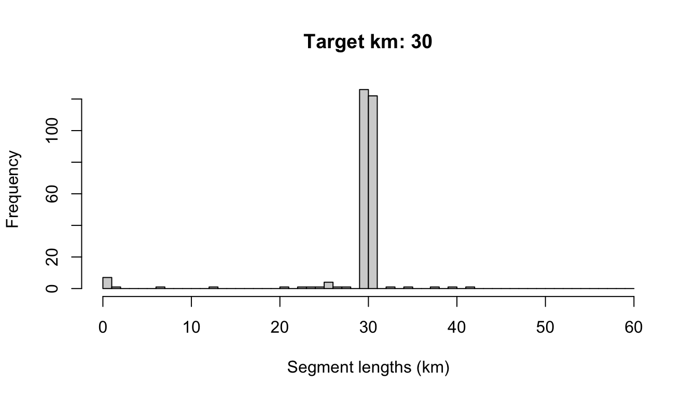

4 Data processing
You can process your survey data using a single function, process_surveys(), which takes two arguments: the filepath(s) to your DAS survey data, and your settings object. For example:
That single command will convert your raw DAS data to a “cruz” object, a list of polished datasets that are prepared to be passed to subsequent analyses.
That function is a wrapper for several discrete stages of data formatting/processing. Behind the scenes, each of those stages is carried out using a specific LTabundR function. The remainder of this page is a detailed step-by-step explanation of the data processing that occurs when you call process_surveys().
Behind the scenes
Bring in cruise data
Specify the path to your .DAS data file(s):
Read in and process this .DAS file using the functions in Sam’s swfscDAS package. To do so quickly, we built a wrapper function that makes this quick and easy:
Cruise numbers:
2001 <NA>
48 0
Rows: 22,486
Columns: 40
$ Event <chr> "*", "*", "*", "*", "*", "*", "*", "*", "*", "*", "B", "R", …
$ DateTime <dttm> 2020-01-19 07:11:52, 2020-01-19 07:13:52, 2020-01-19 07:15:…
$ Lat <dbl> 21.79983, 21.80517, 21.81050, 21.81583, 21.82133, 21.82667, …
$ Lon <dbl> -159.7652, -159.7657, -159.7662, -159.7668, -159.7673, -159.…
$ OnEffort <lgl> FALSE, FALSE, FALSE, FALSE, FALSE, FALSE, FALSE, FALSE, FALS…
$ Cruise <dbl> NA, NA, NA, NA, NA, NA, NA, NA, NA, NA, 2001, 2001, 2001, 20…
$ Mode <chr> NA, NA, NA, NA, NA, NA, NA, NA, NA, NA, "C", "C", "C", "C", …
$ OffsetGMT <int> NA, NA, NA, NA, NA, NA, NA, NA, NA, NA, -10, -10, -10, -10, …
$ EffType <chr> NA, NA, NA, NA, NA, NA, NA, NA, NA, NA, NA, "F", "F", "F", "…
$ ESWsides <dbl> NA, NA, NA, NA, NA, NA, NA, NA, NA, NA, NA, 2, 2, 2, 2, 2, 2…
$ Course <dbl> NA, NA, NA, NA, NA, NA, NA, NA, NA, NA, NA, NA, NA, NA, 350,…
$ SpdKt <dbl> NA, NA, NA, NA, NA, NA, NA, NA, NA, NA, NA, NA, NA, NA, 9.9,…
$ Bft <dbl> NA, NA, NA, NA, NA, NA, NA, NA, NA, NA, NA, NA, NA, 4, 4, 4,…
$ SwellHght <dbl> NA, NA, NA, NA, NA, NA, NA, NA, NA, NA, NA, NA, NA, 6, 6, 6,…
$ WindSpdKt <dbl> NA, NA, NA, NA, NA, NA, NA, NA, NA, NA, NA, NA, NA, 15, 15, …
$ RainFog <dbl> NA, NA, NA, NA, NA, NA, NA, NA, NA, NA, NA, NA, NA, NA, NA, …
$ HorizSun <dbl> NA, NA, NA, NA, NA, NA, NA, NA, NA, NA, NA, NA, NA, NA, NA, …
$ VertSun <dbl> NA, NA, NA, NA, NA, NA, NA, NA, NA, NA, NA, NA, NA, NA, NA, …
$ Glare <lgl> NA, NA, NA, NA, NA, NA, NA, NA, NA, NA, NA, NA, NA, NA, NA, …
$ Vis <dbl> NA, NA, NA, NA, NA, NA, NA, NA, NA, NA, NA, NA, NA, NA, NA, …
$ ObsL <chr> NA, NA, NA, NA, NA, NA, NA, NA, NA, NA, NA, NA, "126", "126"…
$ Rec <chr> NA, NA, NA, NA, NA, NA, NA, NA, NA, NA, NA, NA, "307", "307"…
$ ObsR <chr> NA, NA, NA, NA, NA, NA, NA, NA, NA, NA, NA, NA, "238", "238"…
$ ObsInd <chr> NA, NA, NA, NA, NA, NA, NA, NA, NA, NA, NA, NA, NA, NA, NA, …
$ Data1 <chr> NA, NA, NA, NA, NA, NA, NA, NA, NA, NA, "2001", "F", "126", …
$ Data2 <chr> NA, NA, NA, NA, NA, NA, NA, NA, NA, NA, "C", NA, "307", "06"…
$ Data3 <chr> NA, NA, NA, NA, NA, NA, NA, NA, NA, NA, "-10", NA, "238", "1…
$ Data4 <chr> NA, NA, NA, NA, NA, NA, NA, NA, NA, NA, "N", NA, NA, NA, NA,…
$ Data5 <chr> NA, NA, NA, NA, NA, NA, NA, NA, NA, NA, NA, NA, NA, "15.0", …
$ Data6 <chr> NA, NA, NA, NA, NA, NA, NA, NA, NA, NA, NA, NA, NA, NA, NA, …
$ Data7 <chr> NA, NA, NA, NA, NA, NA, NA, NA, NA, NA, NA, NA, NA, NA, NA, …
$ Data8 <chr> NA, NA, NA, NA, NA, NA, NA, NA, NA, NA, NA, NA, NA, NA, NA, …
$ Data9 <chr> NA, NA, NA, NA, NA, NA, NA, NA, NA, NA, NA, NA, NA, NA, NA, …
$ Data10 <chr> NA, NA, NA, NA, NA, NA, NA, NA, NA, NA, NA, NA, NA, NA, NA, …
$ Data11 <chr> NA, NA, NA, NA, NA, NA, NA, NA, NA, NA, NA, NA, NA, NA, NA, …
$ Data12 <chr> NA, NA, NA, NA, NA, NA, NA, NA, NA, NA, NA, NA, NA, NA, NA, …
$ EffortDot <lgl> FALSE, FALSE, FALSE, FALSE, FALSE, FALSE, FALSE, FALSE, FALS…
$ EventNum <chr> "001", "002", "003", "004", "005", "006", "007", "008", "009…
$ file_das <chr> "HICEASwinter2020.das", "HICEASwinter2020.das", "HICEASwinte…
$ line_num <int> 1, 2, 3, 4, 5, 6, 7, 8, 9, 10, 11, 12, 13, 14, 15, 16, 17, 1…Process strata
Run the following function to add strata and study-area information to each row of DAS data:
This function loops through each stratum data.frame you have provided it in settings$strata, formats the stratum, and asks whether each DAS row occurs within it. For each stratum, a column named stratum_<StratumName> is added to the das object; each row in this column is TRUE (included) or FALSE.
A similar procedure is run if a dataframe is provided in settings$study_area. A column named study_area is added to das containing a boolean (TRUE if the sub-segment or sighting occurs within the study area).
Format DAS data into a cruz object
The function format_das() takes care of some final formatting and initiates the cruz object data structure.
This function (1) remove rows with invalid Cruise numbers, times, or locations; (ii) calculate the distance, in km, between each row of data; (iii) adds a ship column to the dataset, with initials for the ship corresponding to each cruise; (iv) creates a new list, cohorts, which copies the cruise data for each cohort specified in your settings; and (v) adds a stratum column to the data in each cohort. That column specifies
a single stratum assignment for each row of DAS data in the event of overlapping strata, based upon the cohort setting stratum_overlap_handling.
The cruz object
The function format_das() returns a list, which we have saved in an object named cruz, with several slots:
The slots strata and study_area provide the area, in square km, of each polygon being used:
The slot cohorts is itself a list with one slot for each cohort. The slots are named using the id cohort setting.
Each cohort slot has a copy of the DAS data with a new stratum column, with a stratum assignment tailored to its cohort-specific settings. For instance, the default cohort, whose stratum_overlap_handling is set to "smallest", assigns the smallest stratum in the event of overlapping or nested strata:
The fkw_insular cohort, whose stratum_overlap_handling is set to "each" (i.e., effort is allowed to belong to multiple segments, if they overlap, and all analyses will be conducted for each stratum separately), has stratum assignments that look like this;
cruz$cohorts$fkw_insular$stratum %>% table(useNA='ifany')
.
HI_EEZ&OtherCNP HI_EEZ&WHICEAS&OtherCNP
143 22272 When a row of DAS effort occurs in two overlapping strata, the stratum assignment for that row is a concatentation of the names of the strata it falls within, with names separated by “&”.
This list, with these five primary slots, will be referred to as a cruz object.
Segmentize the data
To allocate survey data into discrete ‘effort segments’, which are used in variance estimation in subsequent steps, run the function segmentize(). This process is controlled by both survey-wide and cohort-specific settings, which are now carried in a slot within the cruz object. The process is outlined in detail in the Appendix on Segmentizing.
This function does not change the high-level structure of the cruz object …
… or the cohort names in the cohorts slot:
For each cohorts slot, the list structure is the same:
cruz$cohorts$default %>% names
[1] "segments" "das"
cruz$cohorts$fkw_insular %>% names
[1] "segments" "das" The segments slot contains summary data for each effort segment, including start/mid/end coordinates, average conditions, and segment distance:
cruz$cohorts$default$segments %>% glimpse
Rows: 273
Columns: 38
$ Cruise <dbl> 2001, 2001, 2001, 2001, 2001, 2001, 2001, 2001, 2001, 200…
$ ship <chr> "OES", "OES", "OES", "OES", "OES", "OES", "OES", "OES", "…
$ stratum <chr> "HI_EEZ", "HI_EEZ", "HI_EEZ", "HI_EEZ", "HI_EEZ", "HI_EEZ…
$ study_area <lgl> TRUE, TRUE, TRUE, TRUE, TRUE, TRUE, TRUE, TRUE, TRUE, TRU…
$ seg_id <int> 1, 2, 3, 4, 5, 6, 7, 8, 9, 10, 11, 12, 13, 14, 15, 16, 17…
$ yday <dbl> 21, 22, 39, 68, 68, 22, 19, 19, 20, 20, 21, 22, 23, 23, 2…
$ dist <dbl> 0.0000000, 0.0000000, 41.1937696, 0.3496968, 6.7175579, 1…
$ lat1 <dbl> 22.33300, 22.68750, 20.79283, 21.66800, 21.67700, 22.6875…
$ lon1 <dbl> -161.2520, -161.1208, -153.6117, -161.9232, -161.8537, -1…
$ DateTime1 <dttm> 2020-01-21 07:28:48, 2020-01-22 07:42:01, 2020-02-08 06:…
$ timestamp1 <dbl> 1579591728, 1579678921, 1581144814, 1583692575, 158368981…
$ lat2 <dbl> 22.68750, 20.79217, 21.66967, 21.66717, 21.69233, 22.6861…
$ lon2 <dbl> -161.1208, -153.6090, -161.9245, -161.9325, -161.9128, -1…
$ DateTime2 <dttm> 2020-01-22 07:42:01, 2020-02-08 06:51:34, 2020-03-08 18:…
$ timestamp2 <dbl> 1579678921, 1581144694, 1583692455, 1583692935, 158369107…
$ mlat <dbl> 22.69117, 20.79133, 21.64500, 21.66700, 21.68417, 22.6875…
$ mlon <dbl> -161.1353, -153.6063, -161.7297, -161.9262, -161.8822, -1…
$ mDateTime <dttm> 2020-01-22 07:31:52, 2020-02-08 06:49:34, 2020-03-08 17:…
$ mtimestamp <dbl> 1579591728, 1579678921, 1581144814, 1583692575, 158368981…
$ use <lgl> FALSE, FALSE, FALSE, FALSE, TRUE, TRUE, FALSE, FALSE, FAL…
$ Mode <chr> NA, "P", NA, "C", "C", "P", "C", "C", NA, NA, "C", "C", "…
$ EffType <chr> NA, "S", NA, "N", "N", "S", NA, "F", NA, NA, "F", "S", "S…
$ OnEffort <lgl> FALSE, TRUE, FALSE, FALSE, TRUE, TRUE, TRUE, FALSE, FALSE…
$ ESWsides <dbl> NA, 2, NA, 2, 2, 2, NA, 2, NA, NA, 2, 2, 2, 2, 2, 2, 2, 2…
$ year <dbl> 2020, 2020, 2020, 2020, 2020, 2020, 2020, 2020, 2020, 202…
$ month <dbl> 1, 1, 2, 3, 3, 1, 1, 1, 1, 1, 1, 1, 1, 1, 1, 1, 1, 1, 1, …
$ day <int> 21, 22, 8, 8, 8, 22, 19, 19, 20, 20, 21, 22, 23, 23, 24, …
$ min_line <int> 1080, 1549, 9811, 20883, 20845, 1550, 11, 347, 668, 772, …
$ max_line <int> 1548, 9810, 20882, 20887, 20867, 1554, 346, 667, 771, 147…
$ n_rows <int> 14, 3, 93, 5, 23, 5, 95, 153, 104, 195, 123, 103, 86, 85,…
$ avgBft <dbl> NaN, NaN, 6.909636, 6.000000, 6.000000, 2.000000, 4.67892…
$ avgSwellHght <dbl> NaN, NaN, 7.000000, 7.000000, 7.000000, 4.000000, 7.45332…
$ avgHorizSun <dbl> NaN, NaN, 10.970763, 11.000000, 11.000000, NaN, 7.346991,…
$ avgVertSun <dbl> NaN, NaN, 1.424158, 3.000000, 2.523285, NaN, 1.402253, 2.…
$ avgGlare <dbl> NaN, NaN, 0.3337938, 1.0000000, 1.0000000, NaN, 0.4405329…
$ avgVis <dbl> NaN, NaN, 4.954818, 4.500000, 4.500000, 6.200000, 5.72714…
$ avgCourse <dbl> NaN, NaN, 281.00635, 202.00000, 286.52329, 105.00000, 217…
$ avgSpdKt <dbl> NaN, NaN, 9.777758, 7.400000, 9.613971, 9.000000, 8.74709…# Number of segments
cruz$cohorts$default$segments %>% nrow
[1] 273
# Segment length distribution
hist(cruz$cohorts$default$segments$dist,
breaks = seq(0,60,by=1),
xlab='Segment lengths (km)',
main=paste0('Target km: ',settings$survey$segment_target_km))
And the das slot holds the original data.frame of DAS data, modified slightly: the column OnEffort has been modified according to Beaufort range conditions, and the column seg_id indicates which segment the event occurs within
cruz$cohorts$default$das %>% names
[1] "Event" "DateTime" "Lat" "Lon"
[5] "OnEffort" "Cruise" "Mode" "OffsetGMT"
[9] "EffType" "ESWsides" "Course" "SpdKt"
[13] "Bft" "SwellHght" "WindSpdKt" "RainFog"
[17] "HorizSun" "VertSun" "Glare" "Vis"
[21] "ObsL" "Rec" "ObsR" "ObsInd"
[25] "Data1" "Data2" "Data3" "Data4"
[29] "Data5" "Data6" "Data7" "Data8"
[33] "Data9" "Data10" "Data11" "Data12"
[37] "EffortDot" "EventNum" "file_das" "line_num"
[41] "stratum_HI_EEZ" "stratum_WHICEAS" "stratum_OtherCNP" "study_area"
[45] "year" "month" "day" "yday"
[49] "km_int" "km_cum" "ship" "stratum"
[53] "seg_id" "use" The segmentize() function and its associated settings were designed to give researchers full control over how data are segmented, be it for design-based density analysis (which tend to use long segments of 100 km or more and allow for non-contiguous effort to be included in the same segment) or for habitat modeling (which tend to use short segments of 5 - 10 km and disallow non-contiguous effort to be pooled into the same segment). To demonstrate that versatility, checkout the appendix on segmentizing.
Process sightings
To process sightings for each cohort of species, use the function process_sightings(). This function has three basic steps: for each cohort, the function (1) prepares a sightings table using the function das_sight() from swfscDAS; (2) filters those sightings to species codes specified for the cohort in your settings input; and (3) evaluates each of those sightings, asking if each should be included in the analysis according to your settings.
The function produces a formatted dataset and adds it to a new sightings slot. It does this for each analysis (density and, if specified, distance) in each cohort.
cruz$cohorts$default %>% names
[1] "segments" "das" "sightings"
cruz$cohorts$fkw_insular %>% names
[1] "segments" "das" "sightings"Note that the sightings table has a column named included (TRUE = yes, use it in the analysis). Any sightings that do not meet the inclusion criteria as specified in your settings will be included = FALSE, but they won’t be removed from the data.
Since the sightings in each cohort are processed slightly differently according to the cohort’s specific settings, you should expect different numbers of included/excluded sightings in each cohort-analysis dataset:
cruz$cohorts$default$sightings$included %>% table
.
FALSE TRUE
93 235
cruz$cohorts$fkw_insular$sightings$included %>% table
.
TRUE
4 When this function’s verbose argument is TRUE (the default), a message is printed each time a sighting does not meet the inclusion criteria (see above).
Sightings data structure
The sightings table has many other variables:
cruz$cohorts$default$sightings %>% names
[1] "Event" "DateTime" "Lat" "Lon"
[5] "OnEffort" "Cruise" "Mode" "OffsetGMT"
[9] "EffType" "ESWsides" "Course" "SpdKt"
[13] "Bft" "SwellHght" "WindSpdKt" "RainFog"
[17] "HorizSun" "VertSun" "Glare" "Vis"
[21] "ObsL" "Rec" "ObsR" "ObsInd"
[25] "EffortDot" "EventNum" "file_das" "line_num"
[29] "stratum_HI_EEZ" "stratum_WHICEAS" "stratum_OtherCNP" "study_area"
[33] "year" "month" "day" "yday"
[37] "km_int" "km_cum" "ship" "stratum"
[41] "seg_id" "use" "SightNo" "Subgroup"
[45] "SightNoDaily" "Obs" "ObsStd" "Bearing"
[49] "Reticle" "DistNm" "Cue" "Method"
[53] "Photos" "Birds" "CalibSchool" "PhotosAerial"
[57] "Biopsy" "CourseSchool" "TurtleSp" "TurtleGs"
[61] "TurtleJFR" "TurtleAge" "TurtleCapt" "PinnipedSp"
[65] "PinnipedGs" "BoatType" "BoatGs" "PerpDistKm"
[69] "species" "best" "low" "high"
[73] "prob" "mixed" "ss_tot" "lnsstot"
[77] "ss_percent" "n_sp" "n_obs" "n_best"
[81] "n_low" "n_high" "calibr" "mixed_max"
[85] "spp_max" "included" Columns 43 onwards correspond to sightings information. Columns of note:
speciescontains the species code. There is only one species-code per row (i.e, multi-species sightings have been expanded to multiple rows).best,low, andhighcontain the refined group size estimates, averaged across observers and calibrated according to the cohort’s settings specifications. For multi-species sightings, these numbers represent the number of individuals for the single species represented in the row (i.e., the original group size estimate has been scaled by the percentage attritbuted to this species).The columns following those group size estimates (
probthroughspp_max) detail how group sizes were estimated:probindicates whether probable species codes were accepted;mixedindicates whether this species’ sighting is part of a mixed-species sighting;n_spprovides the number of species occurring in this sighitng;n_obsgives the number of observers who contributed group size estimates;n_bestthroughn_highgives the number of valid group size estimates given; andcalibrindicates whether or not calibration was attempted for this sighting based on the settings (see next section);mixed_maxindicates whether this species was the most abundant in the sighting (if multi-species);spp_maxindicates the species code for the most abundant species in the sighting (if multi-species).As explained above, the final column,
included, indicates whether this species should be included in the analysis.
Here is a glimpse of the data:
cruz$cohorts$fkw_insular$sightings %>% glimpse
Rows: 4
Columns: 86
$ Event <chr> "S", "S", "S", "S"
$ DateTime <dttm> 2020-01-28 16:35:09, 2020-02-27 11:52:38, 2020-02-28 …
$ Lat <dbl> 20.80800, 18.83133, 19.13683, 18.20767
$ Lon <dbl> -158.3488, -157.1577, -156.3863, -154.7485
$ OnEffort <lgl> TRUE, TRUE, TRUE, TRUE
$ Cruise <dbl> 2001, 2001, 2001, 2001
$ Mode <chr> "C", "C", "C", "C"
$ OffsetGMT <int> -10, -10, -10, -10
$ EffType <chr> "S", "S", "N", "S"
$ ESWsides <dbl> 2, 2, 2, 2
$ Course <dbl> 122, 285, 90, 107
$ SpdKt <dbl> 9.6, 9.4, 8.6, 7.9
$ Bft <dbl> 3, 5, 5, 6
$ SwellHght <dbl> 5, 8, 7, 11
$ WindSpdKt <dbl> 10, 17, 17, 24
$ RainFog <dbl> 5, 5, 5, 5
$ HorizSun <dbl> 4, 7, 3, 4
$ VertSun <dbl> 2, 1, 1, 1
$ Glare <lgl> FALSE, FALSE, FALSE, FALSE
$ Vis <dbl> 6.0, 5.5, 5.0, 4.0
$ ObsL <chr> "238", "238", "197", "125"
$ Rec <chr> "125", "125", "227", "197"
$ ObsR <chr> "197", "197", "126", "227"
$ ObsInd <chr> NA, NA, NA, NA
$ EffortDot <lgl> TRUE, TRUE, TRUE, TRUE
$ EventNum <chr> "422", "213", "238", "371"
$ file_das <chr> "HICEASwinter2020.das", "HICEASwinter2020.das", "HIC…
$ line_num <int> 5016, 15756, 16275, 18395
$ stratum_HI_EEZ <lgl> TRUE, TRUE, TRUE, TRUE
$ stratum_WHICEAS <lgl> TRUE, TRUE, TRUE, TRUE
$ stratum_OtherCNP <lgl> TRUE, TRUE, TRUE, TRUE
$ study_area <lgl> TRUE, TRUE, TRUE, TRUE
$ year <dbl> 2020, 2020, 2020, 2020
$ month <dbl> 1, 2, 2, 3
$ day <int> 28, 27, 28, 3
$ yday <dbl> 28, 58, 59, 63
$ km_int <dbl> 0, 0, 0, 0
$ km_cum <dbl> 1646.400, 5375.415, 5560.489, 6239.292
$ ship <chr> "OES", "OES", "OES", "OES"
$ stratum <chr> "HI_EEZ&WHICEAS&OtherCNP", "HI_EEZ&WHICEAS&OtherCNP",…
$ seg_id <int> 158, 232, 111, 242
$ use <lgl> TRUE, TRUE, TRUE, TRUE
$ SightNo <chr> "131", "255", "258", "285"
$ Subgroup <chr> NA, NA, NA, NA
$ SightNoDaily <chr> "20200128_8", "20200227_19", "20200228_18", "20200303…
$ Obs <chr> "197", "125", "126", "125"
$ ObsStd <lgl> TRUE, TRUE, TRUE, TRUE
$ Bearing <dbl> 79, 0, 15, 314
$ Reticle <dbl> 1.8, NA, 1.5, 5.0
$ DistNm <dbl> 1.88, 0.20, 2.09, 0.92
$ Cue <dbl> 3, 2, 3, 3
$ Method <dbl> 4, 1, 4, 4
$ Photos <chr> "Y", "N", "Y", "N"
$ Birds <chr> "N", "N", "N", "N"
$ CalibSchool <chr> "N", "N", "N", "N"
$ PhotosAerial <chr> "N", "N", "N", "N"
$ Biopsy <chr> "N", "N", "N", "N"
$ CourseSchool <dbl> NA, NA, NA, NA
$ TurtleSp <chr> NA, NA, NA, NA
$ TurtleGs <dbl> NA, NA, NA, NA
$ TurtleJFR <chr> NA, NA, NA, NA
$ TurtleAge <chr> NA, NA, NA, NA
$ TurtleCapt <chr> NA, NA, NA, NA
$ PinnipedSp <chr> NA, NA, NA, NA
$ PinnipedGs <dbl> NA, NA, NA, NA
$ BoatType <chr> NA, NA, NA, NA
$ BoatGs <dbl> NA, NA, NA, NA
$ PerpDistKm <dbl> 3.417790, 0.000000, 1.001806, 1.225640
$ species <chr> "033", "033", "033", "033"
$ best <dbl> 35.096667, 1.000000, 13.913043, 6.956522
$ low <dbl> 19.672365, NA, 9.165151, 5.000000
$ high <dbl> 43.42268, NA, 16.58312, 20.00000
$ prob <lgl> FALSE, FALSE, FALSE, FALSE
$ mixed <lgl> FALSE, FALSE, FALSE, FALSE
$ ss_tot <dbl> 35.096667, 1.000000, 13.913043, 6.956522
$ lnsstot <dbl> 3.558106, 0.000000, 2.632827, 1.939680
$ ss_percent <dbl> 1, NaN, 1, 1
$ n_sp <dbl> 1, 1, 1, 1
$ n_obs <int> 3, 1, 2, 1
$ n_best <int> 3, 0, 2, 1
$ n_low <int> 3, 0, 2, 1
$ n_high <int> 3, 0, 2, 1
$ calibr <lgl> TRUE, TRUE, TRUE, TRUE
$ mixed_max <lgl> TRUE, FALSE, TRUE, TRUE
$ spp_max <chr> "033", NA, "033", "033"
$ included <lgl> TRUE, TRUE, TRUE, TRUENote that the process_sightings() function draws upon cruz$settings for inclusion criteria, but some of those settings can be overridden with the function’s manual inputs if you want to explore your options (see below).
School size estimates
In the settings we are using in this tutorial, school size estimates are adjusted using the calibration models from Barlow, Gerrodette, and Perryman (1998) (their analysis is refined slightly and further explained in Gerrodette, Perryman and Barlow, 2002). These calibration corrections are observer-specific. Some observers tend to underestimate school size and their estimates are adjusted up; others tend to overestimate and their estimates are adjusted down. Some observers do not have calibration coefficients, and for them a generic adjustment (upwards, by dividing estimates by 0.8625) is used. Each observer’s estimate is calibrated, then all observer estimates are averaged. To do that averaging, our settings specify that we shall use a geometric weighted mean, instead of an arithmetic mean, that weights school size estimates from multiple observers according to the variance of their calibration coefficients.
Here are our current best estimates of school size:
cruz$cohorts$default$sightings$best %>% head(20)
[1] 1.1594203 19.1620266 3.4702883 1.1594203 2.3188406 2.3188406
[7] 2.3188406 3.4782609 2.3188406 2.3188406 1.1594203 1.1594203
[13] 0.9370535 73.2878434 1.1594203 1.1594203 4.6376812 7.7776277
[19] 1.1594203 1.1594203Let’s compare those estimates to unadjusted ones, in which calibration (and therefore weighted geometric mean) is turned off:
cruz_demo <- process_sightings(cruz,
calibrate = FALSE,
verbose = FALSE)
cruz_demo$cohorts$defaul$sightings$best %>% head(20)
[1] 1.000000 19.077486 3.454978 1.000000 2.000000 2.000000 2.000000
[8] 3.000000 2.000000 2.000000 1.000000 1.000000 1.000000 62.970508
[15] 1.000000 1.000000 4.000000 6.708204 1.000000 1.000000Note that, since calibration is only used for schools above a certain size, the difference between calibration and non-calibrated estimates becomes clearer in larger groups.
You can also carry out calibration corrections without using a geometric weighted mean (the arithmetic mean will be used instead):
cruz_demo <- process_sightings(cruz,
calibrate = TRUE,
geometric_mean = FALSE,
verbose = FALSE)
cruz_demo$cohorts$default$sightings$best %>% head(20)
[1] 1.1594203 22.7906203 4.1274352 1.1594203 2.3188406 2.3188406
[7] 2.3188406 3.4782609 2.3188406 2.3188406 1.1594203 1.1594203
[13] 0.9370535 89.9371981 1.1594203 1.1594203 4.6376812 8.1159420
[19] 1.1594203 1.1594203Note that when geometric_mean = TRUE but calibration is not carried out, the simple geometric mean is calculated instead of the weighted geometric mean, since the weights are the variance estimates from the calibration routine.
Also note that school size calibration is only carried out if settings$group_size_calibration is not NULL. However, even when calibration coefficients are provided, it is possible to specify that calibration should only be carried out for raw estimates above a minimum threshold (see cohort setting calibration_floor, whose default is 0), since observers may be unlikely to mis-estimate the school size of a lone whale or pair. For observers who have calibration coefficients in the settings$group_size_coefficients table, that minimum is specified for each observer individually. For observers not in that table, calibration will only be applied to raw school size estimates above settings$cohorts[[i]]$calibration_floor or above.
Subgroup size estimates
After sightings data are processed, the process_surveys() function calls the subroutine process_subgroups() to find and calculate subgroup school size estimates for false killer whales, if any occur in the DAS data (Event code “G”). If subgroups are found, a subgroups slot is added to the analysis list for a cohort. This subgroups slot holds a list with three dataframes: events (each row is a school size estimate for a single subgroup during a single phase – 1 or 2 – within a single sighting); subgroups (each row is a single phase for a single subgroup, with all school size estimates averaged together (both arithmetically and geometrically); and sightings (each row is a school size estimate for a single phase for a single sighting, with all subgroup school sizes summed together). Examples of these datasets will be provided at a later date.
Review
By the end of this process, you have a single data object, cruz, with all the data you need to move forward into the next stages of mapping and analysis.
Each species-specific cohort has its own list under cruz$cohorts:
Each of these cohorts has the same list structure:
segmentsis a summary table of segments.dasis the rawDASdata, modified withseg_idto associate each row with a segment.sightingsis a dataframe of sightings processed according to this cohort’s settings.subgroups(if any subgroup data exist in your survey) is a list with subgroup details.
In each of theese data.frames, there are three critically important columns to keep in mind:
seg_id: this column is used to indicate the segment ID that a row of data belongs to.use: this column indicates whether a row of effort should be used in the line-transect analysis Every row of data within a single segment with have the sameusevalue.included: this column occurs in thesightingsdataframe only. It indicates whether the sightings should be included in line-transect analysis based on the specified settings. Any sighting withuse == FALSEwill also haveincluded == FALSE, but it is possible for sightings to haveuse == TRUEwithincluded == FALSE. For example, if the settingabeam_sightingsis set toFALSE, a sighting with a bearing angle beyond the ship’s beam can be excluded from the analysis (included == FALSE) even though the effort segment it occurs within will still be used (use == TRUE).